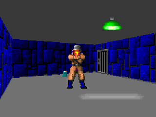

Explicit Probabilistic Models

Wikipedia, public domain (2008)
Alexey Milovidov
ClickHouse is fast.
This is a known fact.
Everyone knows this.
We need performance tests.
We added the first automated tests in 2013.
Based on Yandex.Metrica dataset of 1 billion page views.
Queries — those expected to be executed from the Yandex.Metrica interface.
Added comparisons with other systems: Vertica, MonetDB.
Part of functional tests use the same dataset.
In 2013, ClickHouse was just beginning to be used inside Yandex.
In 2016, ClickHouse became open-source
and closed tests became a serious problem.
Performance tests are not reproducible externally
— they require closed data that cannot be published.
Part of functional tests are also not available externally.
Performance tests don't evolve. There is a need to significantly expand the performance test suite to check for performance changes in individual system components in isolation.
Performance tests are not run per-commit and for pull requests, external developers have no way to check their code for performance regressions.
Throw away old tests?
— known benchmarks:
TPC-H, TPC-DS, Star Schema Benchmark, AMPLab Big Data Benchmark;
— open datasets:
Transportation Statistics "Ontime" data; NYC Taxi rides;
But:
— need to check performance regressions on our queries;
— need to preserve existing functional tests;
— rewriting tests is too costly.
It's important to test performance
on real production data!
Example: if we generate test data uniformly and randomly,
then the data won't compress.
But data compression is the most important characteristic for analytical databases.
Data compression is always a trade-off between performance and compression ratio, where there is no single correct solution.
If we don't consider data compression when testing performance, the results are meaningless.
https://yandex.github.io/clickhouse-presentations/highload_siberia_2018/
Conclusion:
Test data must have
realistic compression ratios.
Example:
Suppose we're interested in the query performance:
SELECT RegionID, uniq(UserID) AS visitors
FROM test.hits
GROUP BY RegionID
ORDER BY visitors DESC
LIMIT 10
Such a query is typical for Yandex.Metrica
— which data structure is used for the uniq aggregate function;
— how many different RegionID values exist;
— how much memory each uniq function state will require;
— it's important to know that the data volume for different regions is distributed unevenly (power law);
— and if so — then it's important that uniq aggregate function states with few values use little memory.
If we just use HyperLogLog
— we get fixed memory consumption
for each RegionID — aggregation key.
— guaranteed low performance.
Conclusion:
Test data must represent distribution properties:
— cardinalities — number of distinct values in columns;
— joint cardinalities of multiple columns;
* but these requirements slightly contradict anonymization.
Example:
Suppose we're testing the performance
not of an analytical database, but something simpler:
for example, hash tables.
Hash table performance depends on the balance
between quality and speed of the hash function.
Obtain data for performance testing.
Same structure as the closed data.
Anonymized, suitable for public release.
But preserving properties important for testing:
— compression ratios;
— value cardinalities;
— probability distribution properties.
Create a tool available to external users,
with which anyone can anonymize their dataset for publication.
So we can debug and test performance
on other people's data, similar to production.
And also: anonymized data
should still be interesting to look at.
Wikipedia, public domain (2008)
«By eye» for each column select
a family of probability distributions.
Estimate the distribution parameters from this family using statistics.
Generate new data using the obtained distribution.
Result — a C++ script:
EventTime.day(std::discrete_distribution<>({
0, 0, 13, 30, 0, 14, 42, 5, 6, 31, 17, 0, 0, 0, 0, 23, 10, ...})(random));
EventTime.hour(std::discrete_distribution<>({
13, 7, 4, 3, 2, 3, 4, 6, 10, 16, 20, 23, 24, 23, 18, 19, 19, ...})(random));
EventTime.minute(std::uniform_int_distribution<UInt8>(0, 59)(random));
EventTime.second(std::uniform_int_distribution<UInt8>(0, 59)(random));
UInt64 UserID = hash(4, powerLaw(5000, 1.1));
UserID = UserID / 10000000000ULL * 10000000000ULL
+ static_cast<time_t>(EventTime) + UserID % 1000000;
random_with_seed.seed(powerLaw(5000, 1.1));
auto get_random_with_seed = [&]{ return random_with_seed(); };
Heuristics:
To preserve continuity of time series, we model not the value itself, but the difference from the previous one.
Dependencies between columns must be written explicitly: for example, to generate an IP address use a hash of the visitor ID and add some randomness.
Advantages:
— conceptual simplicity;
Disadvantages:
— implementation effort;
— the implemented solution is tailored to one type of data.
The "hits" table has more than 100 columns as of 2013.
All of them need a model :(
Models can be selected automatically
— best fit from a set of models + regularization.
Dependencies between data can also be found automatically
— calculate relative entropy between each pair of columns.
Still too labor-intensive.

«The Unreasonable Effectiveness of Recurrent Neural Networks»
http://karpathy.github.io/2015/05/21/rnn-effectiveness/
The task was taken by a random person «from the street»
— a HSE student for their thesis.
(To obtain the test dataset, NDA was signed).
Need to generate structured data, not just text.
Two approaches:
Can keep data structure fixed,
and only generate values — «fillers».
But this requires code adaptation.
Can generate text dumps. There will be invalid lines, but they can simply be skipped during loading.
Data quality at first glance is OK:

Sharif Rinatovich Anvardinov, 2018
Generation speed — approximately 100 rows per second
on one machine with CPU.
— Won't manage to generate a 1 billion row dataset
before thesis defense.
Model size — about a gigabyte
(after training on a dataset of several gigabytes)
— Data anonymization becomes questionable.
Neural network compression and inference acceleration
— should be possible, but nobody did anything.

Solution is completely impractical
...at least for now.
The person defended their thesis with an excellent grade :)
Code was thrown out and never used again.
Need to generate data
—whose compression ratios will be
exactly the same as the original data;
—and data decompresses at exactly the same speed.
How to do this?
Need to edit compressed data bytes directly!
Then the compressed data size won't change,
but the data itself will change.
And everything will work fast too.
Let's say we're only interested in LZ4.
Data compressed with LZ4 consists of two types of commands:
— copy the next N bytes as is (called "literals");
— repeat N bytes that were in the file at distance M (called "match", minimum repetition length is 4).
In the compressed file we'll leave matches as is,
but change byte values in literals.
As a result, after decompression we get a file where all repeating sequences of length 4 or more still repeat and repeat at the same distances, but consist of a different set of bytes.
URL:
http://ljc.she/kdoqdqwpgafe/klwlpm&qw=962788775I0E7bs7OXeAyAx
http://ljc.she/kdoqdqwdffhant.am/wcpoyodjit/cbytjgeoocvdtclac
http://ljc.she/kdoqdqwpgafe/klwlpm&qw=962788775I0E7bs7OXe
http://ljc.she/kdoqdqwdffhant.am/wcpoyodjit/cbytjgeoocvdtclac
http://ljc.she/kdoqdqwdbknvj.s/hmqhpsavon.yf#aortxqdvjja
http://ljc.she/kdoqdqw-bknvj.s/hmqhpsavon.yf#aortxqdvjja
http://ljc.she/kdoqdqwpdtu-Unu-Rjanjna-bbcohu_qxht
http://ljc.she/kdoqdqw-bknvj.s/hmqhpsavon.yf#aortxqdvjja
http://ljc.she/kdoqdqwpdtu-Unu-Rjanjna-bbcohu_qxht
http://ljc.she/kdoqdqw-bknvj.s/hmqhpsavon.yf#aortxqdvjja
http://ljc.she/kdoqdqwpdtu-Unu-Rjanjna-bbcohu-702130
Disadvantages:
— dependencies between columns are not preserved;
— data in different compressed blocks is transformed differently;
— data is not anonymized enough.
and more
http://fabiensanglard.net/fizzlefade/
Wolfenstein 3D, Id Software, 1992; Fabien Sanglard, 2017
A one-to-one transformation of a set of values,
that looks random.
Example: Linear-Feedback Shift Register

Wikipedia (KCAuXy4p - Own work), CC0, 2017
Can be composed of simpler
one-to-one transformations.
Examples:
— multiplication by an odd number with overflow;
— xor-shift: x ^= x >> N;
— CRC-N, where N is the number of argument bits;
https://preshing.com/20121224/how-to-generate-a-sequence-of-unique-random-integers/
Wikipedia (Amirki derivative work), CC BY-SA 3.0, 2011
1. Argument bits are split into two halves:
arg: xxxxyyyy
arg_l: xxxx
arg_r: yyyy
2. The right half goes to the left position. And the right position gets xor of the left half and F(right half):
res: yyyyzzzz
res_l = yyyy = arg_r
res_r = zzzz = arg_l ^ F(arg_r)
This transformation is reversible:
we can compute F(res_l) ^ res_r and get arg_l.
We'll use random permutations
to transform numeric columns.
— cardinalities are fully preserved;
— joint cardinalities are fully preserved;
— repeating values continue to repeat
at the same distance from each other;
We'll also preserve order of magnitude.
— permutations within one size class.
Order-N Markov model
— defines the probability of the next character given N previous ones.
P(moma | mom) = 0.9
P(momb | mom) = 0.05
P(momc | mom) = 0.01
...
Due to small memory, they generate funny, nonsensical texts.
But they work fast :)
Title:
Fashion Donuts - Informer.Ru - national accident in express fixik
prizes, traffic jams in Newstin. Trials online nails, but not feast, electroshock footage with discount or - Yandex.Afisha@Mail.Ru - fashion dating - online store STREETBALL on internet auto. Odessa) - AUTO.ria.ua Bazar autoradio films online free and video
Preserving repeating values:
We'll initialize the random number generator
with a hash function of the original value.
Identical values transform to identical ones.
Preserving repeating fragments of values.
We want URLs starting with the same domain,
after transformation to also start with the same domain,
but a different one.
https://www.yandex.ru/images/cats/?id=12345
https://www.yandex.ru/images/cats/?id=67890
->
http://ftp.edu.co/cgi-bin/index.phtml#hello
http://ftp.edu.co/cgi-bin/index.phtml#world
Preserving repeating fragments of values.
Solution: as the random number generator for choosing the next letter, we'll use a hash of an 8-byte sliding window in the data.
https://www.yandex.ru/images/cats/?id=12345
^^^^^^^^
distribution: [aaaa][b][cc][dddd][e][ff][ggggg][h]...
hash("images/c") % total_count: ^
http://ftp.google.kz/cg...
Progaradar-children pregnant departures or Dachna Brideica and MO | Freezers. - Posters to enter into Accessories
Progaradar-children shore — Yandex.Money: Payment journal five bicycles on Lore - dfghf — ya.ru - real estate in Moscow) by 473682 announcements - Sale Comprom
Progaradar-children free! in large assortment»in Moscow - Embroidery — Omsk Free in Most sandal height
Progaradar-children free! in large assortment»in Moscow, transport portal
Progaradar-children berdyansk Fashions. Recipe with photo gallery and covered loud football Muscovy@Mail.Ru - Search
Progaradar-children pregnant sale Watch best price, community 2010 | Designer MAIN. Delivery
Progaradar-children free! in large assortment»труди Price: 820 0000 km., Taganda apartments in Saint-Pet
Progaradar-children pregnant monthly - DoramaTv.ru - Dresses around world. Internet sale auto used and on with discount
Progaradar-children pregnant room in 2013 year, policemen used in Stavropavlina and strollers -> Magnetaz 80 cell.RU
Progaradar-children pregnant - Official forums Kalinin (Ukraine. Avtoria Baksler Kudryavtsev delivery, vacancies, hotel sale
Progaradar-children pregnancy detailed bld. 5, 69, communication W*oychivom - Yandex.Maps, houses, what price tow truck forum games World of Tanks
Progaradar-children cap, fatherland and in pink page 2 from cabinet search by health@Mail.Ru
Progaradar-children pregnancy program in China heights Bar, weather Maniku. Records in Smolensk
— put everything together in the clickhouse-obfuscator utility;
— installed in the clickhouse-client package;
— inside — random permutations and Markov models;
— works deterministically, result is parameterized by a key;
— suitable for any tabular data;
— doesn't depend on ClickHouse — can be used for any DB's data;
— works fast: on data with ~100 columns
~10,000 rows per second on a single core;
clickhouse-obfuscator \
--seed "$(head -c16 /dev/urandom | base64)" \
--input-format TSV --output-format TSV \
--structure 'CounterID UInt32, URLDomain String, \
URL String, SearchPhrase String, Title String' \
< table.tsv > result.tsv
clickhouse-obfuscator --help
Data for functional tests is published:
https://clickhouse-datasets.s3.yandex.net/hits/tsv/hits_v1.tsv.xz
https://clickhouse-datasets.s3.yandex.net/visits/tsv/visits_v1.tsv.xz
https://clickhouse.com/docs/ru/getting_started/example_datasets/metrica/
Not everything is unambiguous, but publication of this data was approved.
External developers use this data
for real performance tests.